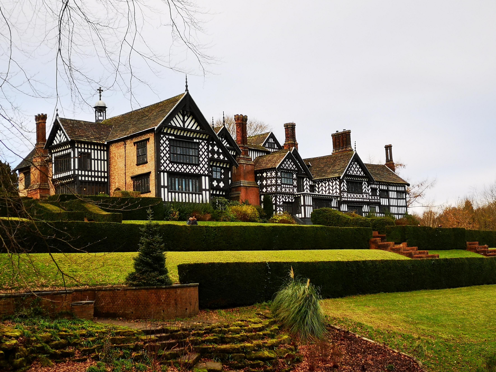
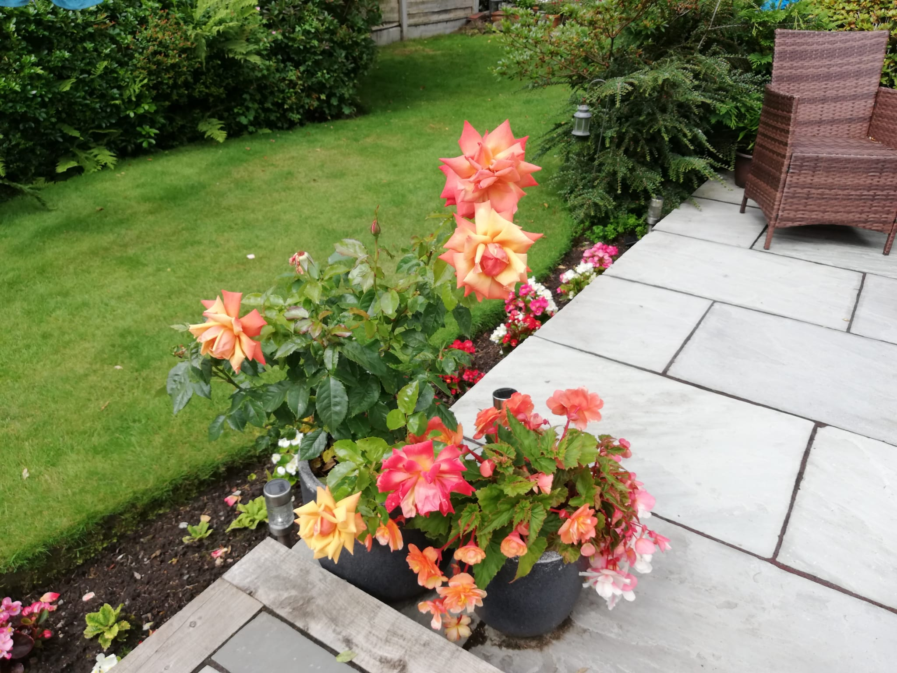

Bramhall Park
Bramhall park is a great place to visit because it is a park that is full of wildlife and provides an excellent environment for people all around Bramhall to visit and view the amazing framed hall.
Bramhall park is a 14th century hall.
Brookside garden centre
Brookside garden centre is a spacious well laid out garden centre with a fantastic range of plants, flowers and gardening essentials.
Brookside garden centre is a great place to visit for young adults and teenagers because it helps them understand what nature has to offer and is a great place to go with friends because there is so much to do and so much to see. So Brookside Garden centre is the place for you.
Spend time in your garden
Enjoy spending time in your own garden in the summer and see the plants grow.
There is no place better then spending time in your own garden and sitting down in the sun watching all the nature and all the different plants this is why nature can make a difference to young teenagers and adults lives because it helps them understand the beauty of nature.